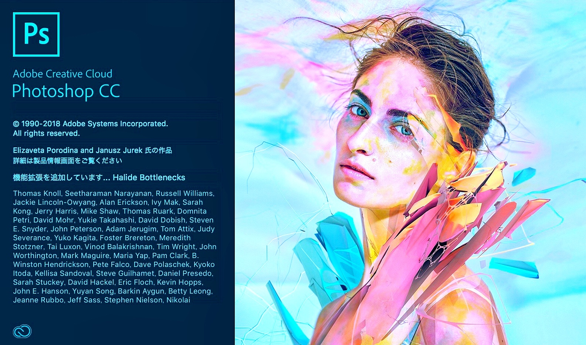

Photoshop Retouch Report

6/1（金曜）の授業ではPhotoshopという編集ソフトを使って写真のレタッチをおこなった！
それぞれ自由なテーマを決め、写真レタッチの工程・過程をレポートにまとめた。
私は 「SF世界のような風景写真をつくる！」をテーマにして自分が撮影した写真をもとに編集をおこなった。
 Before.
Before.
 After.
After.
作業工程１
彩度・色調の変更:1ブルー、イエロー、レッド、グリーンの彩度を０(ほとんど白)にし、風景にあるもの（主に建築物）
に統一感を持たせ、日常風景と違った世界観を持たせる。

彩度・色調の変更:2
残しておいたシアン系の彩度をあげて、SFの宇宙的な冷たい風景感をより強く演出させる。

作業工程2
写真を合成する写真の下部にある歩道階段の壁面に「電子回路」のような模様絵を合成させる。（全部で15の画像）
合成（ブレンド）する写真の透明度を下げて、（100％→80％）元の写真との位置を確かめやすくする。
拡大・縮小や「ゆがみ」などの微調整をおこなう。 合成する写真の設定「比較カラー（明）」にする。

壁面の形に合わせながら、全ての面に合成していく。
（編集→表現→「ゆがみ」）

歩道の床面も同様

作業工程3
写真の合成（建物）風景の写真に近未来的な高層建築物に見立てたものを合成する。（全部で５つ）
すべての合成の設定は「輝度」


写真の合成（惑星）
SFらしい雰囲気を作るため、土星の写真を合成（少し傾けた方がリアルだと思った。） （合成の設定は「スクリーン」）

作業工程4
明度、彩度、色調の最終調整（統一感をあげる）全体の色調寒度をあげる。
風景として、ものにメリハリをあたえたかったので「コントラスト」を高めた。

＜完成写真＞
HOME PAGE